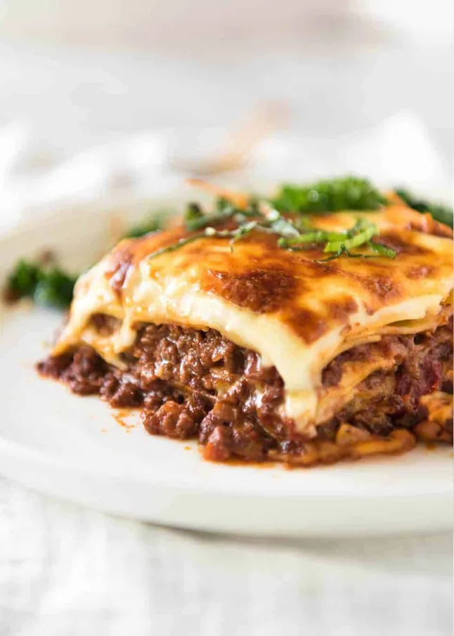

Lasagna Recipe

Description
Lasagna is a classic Italian dish made with layers of pasta, meat sauce and white sauce. It's a hearty and comforting meal that's perfect for family dinners.
Ingredients
- 12 lasagna noodles
- 1 pound ground beef
- 2 cups marinara sauce
- 1 cup ricotta cheese
- 2 cups shredded mozzarella cheese
- 1/2 cup grated Parmesan cheese
- 1 egg
- 2 cloves garlic, minced
- 1 teaspoon dried basil
- Salt and pepper to taste
Instructions
- Preheat oven to 375°F (190°C).
- Cook lasagna noodles according to package instructions. Drain and set aside.
- In a large skillet, cook ground beef over medium heat until browned. Drain excess fat.
- Add minced garlic and cook for another minute. Stir in marinara sauce, dried basil, salt, and pepper. Simmer for 10 minutes.
- In a bowl, combine ricotta cheese, egg, and half of the grated Parmesan cheese.
- In a baking dish, spread a thin layer of meat sauce. Layer with 4 lasagna noodles, half of the ricotta mixture, a third of the mozzarella cheese, and another layer of meat sauce. Repeat layers, ending with meat sauce and remaining mozzarella and Parmesan cheese on top.
- Cover with aluminum foil and bake for 25 minutes. Remove foil and bake for an additional 25 minutes, or until cheese is bubbly and golden brown.
- Let lasagna cool for 10 minutes before serving. Enjoy!
Home